시간과 돈, 무엇을 기대해야 할까요
강의는 기술보다 기대치부터 잡아요. 초보가 가장 먼저 묻는 두 질문, '돈이 얼마나 필요한가'와 '얼마나 걸리나'에 숫자로 답해 두면 조급함을 내려놓고 배우는 데 집중할 수 있다는 이유예요.
필요한 계좌 크기는 목표 수익 ÷ 월 수익률
먼저 트레이딩으로 매달 채우고 싶은 금액을 하나 정해요. 영상은 월 500(달러든 파운드든 상관없어요)을 예로 들어요. 이 금액을 월 수익률로 나누면 그만큼 벌기 위해 계좌에 있어야 할 돈이 나와요. 화이트보드 왼쪽에 500을 0.02·0.04·0.06으로 나눈 식이, 오른쪽 칸에 결과 25,000·12,500·8,333이 적혀 있어요.
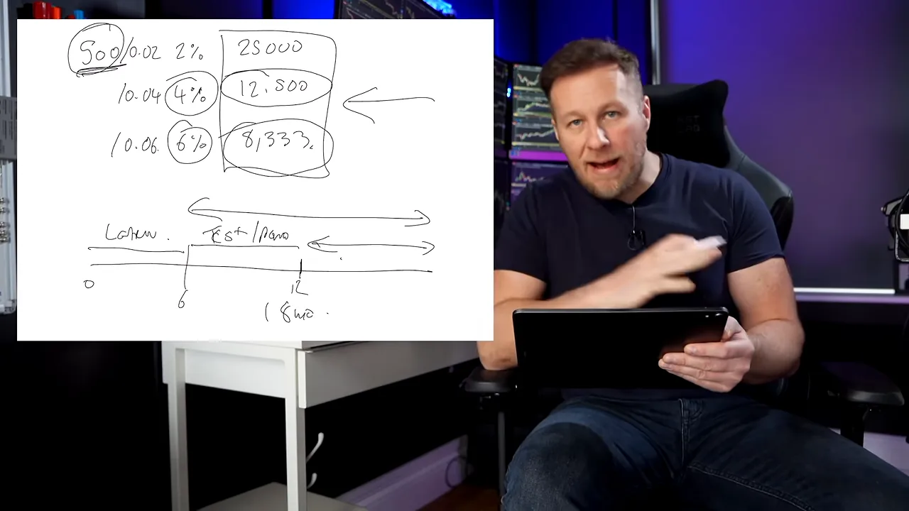
말로는 "0.2, 0.4, 0.6으로 나눈다"고 하지만 보드에 적힌 0.02·0.04·0.06이 맞는 값이에요. 발표자가 함께 일해 본 트레이더들은 장기 평균으로 월 2~6%를 냈다고 해요. 10%, 20%가 나는 달도 있지만 긴 기간의 평균을 봐야 한다고 강조해요.
실제로는 물가, 생활비, 실력 변화, 계좌에 일부를 남겨 복리로 키우는 몫까지 따져야 해요. 그래도 '수백만 달러가 있어야 하는 건 아니구나'를 느끼고, 수익률과 계좌 크기의 관계를 감으로 익히는 출발점으로는 충분하다고 해요.
배우는 6개월, 증명하는 12개월
꾸준히 수익을 내기까지 보통 12~18개월이 걸린다고 해요. 앞의 화이트보드 아래쪽 선이 그 일정이에요. 0~6개월은 배우는 기간이고, 그 뒤로는 데모 계좌(가상의 돈으로 하는 연습 계좌)와 테스트로 성과를 쌓아요.
발표자는 사람들이 짧은 기간에 이룰 수 있는 건 과대평가하고, 3~5년에 이룰 수 있는 건 과소평가한다고 말해요. "이틀 만에 배우는 트레이딩 강좌"에 기대했다가 생각보다 어렵다고 느끼면 금방 포기하게 된다는 거예요. 기타나 골프를 배우듯 시간이 드는 기술이니, 애초에 시장을 들여다보는 게 즐거운 사람이어야 한다고 해요.
꾸준함은 일정표에서 시작해요
여러 전략과 시간대를 오가면 꾸준한 결과도 나오지 않아요. 그래서 공부와 거래 시간을 일정표에 미리 막아 두라고 해요. 아래 장면은 요일별 칸에 빗금을 친 예시로, 월요일 아침·목요일 밤·주말 일부처럼 회의나 등교 준비에 방해받지 않는 시간만 골랐어요.
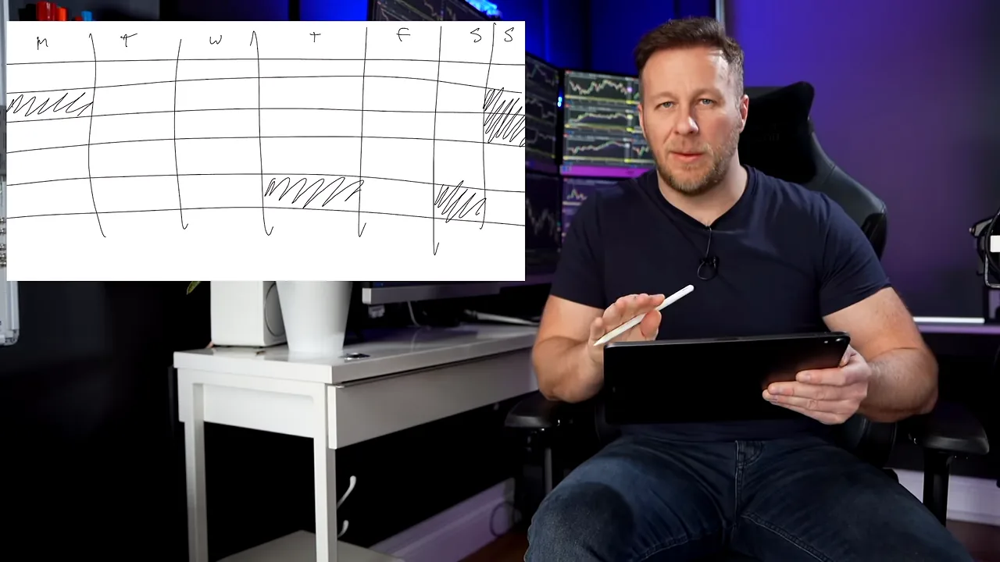
목표는 하루 평균 1시간, 일주일에 7시간이에요. 덜 해도 괜찮지만 일정해야 한다고 해요. 꾸준히 하면 진도가 빨리 나가고, 그게 다시 동기가 된다는 설명이에요.
돈 걱정이 머리를 차지하면 판단력이 떨어진다는 점도 짚어요. 발표자는 인도 남부 농부들의 지능검사 점수가 경기가 나쁠 때 30점 떨어졌다는 연구를 예로 들어요.
주변에 알리고, 같은 길을 가는 사람 곁에 있기
트레이딩은 외로운 공부라고 해요. 사기와 과장 광고 탓에 이야기를 꺼내면 도박꾼 취급을 받기 쉬워요. 그래서 오히려 가족과 동료에게 "전문 트레이더가 되려고 공부 중"이라고 당당히 말하라고 해요. 기타를 배운다고 하면 아무도 비웃지 않는 것처럼요. 알려 두면 일정표에 막아 둔 공부 시간을 주변이 존중해 주는 효과도 있어요. 의견만 많은 포럼보다는 같은 목표를 가진 진지한 트레이더들 곁에 있으라는 조언도 덧붙여요.
캔들 하나에 담긴 이야기
본격적인 기술은 차트 언어부터 시작해요. 차트 위의 막대 하나하나가 정해진 시간 동안 가격이 어떻게 움직였는지를 요약한 거예요.
네 개의 값: 시가, 고가, 저가, 종가
캔들스틱 하나는 1시간이든 하루든 한 구간의 시가(처음 가격), 고가, 저가, 종가(마지막 가격)를 담아요. 아래 그림 왼쪽 초록 캔들은 아래쪽 경계가 OPEN, 위쪽 경계가 CLOSE예요. 끝날 때 가격이 시작보다 높았다는 뜻이죠. 가운데 빨간 캔들은 반대로 위가 OPEN, 아래가 CLOSE예요. 몸통 위아래로 뻗은 선의 끝이 HIGH와 LOW예요.
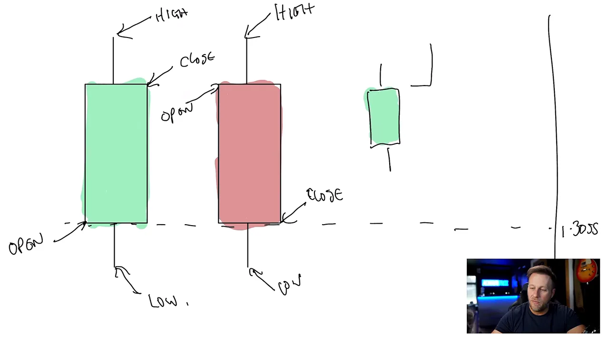
실제 차트에서는 한 캔들의 종가가 바로 다음 캔들의 시가가 돼요. 그래서 캔들들이 계단처럼 이어 붙어 보여요. 가격이 건너뛰는 갭이 생길 때만 예외예요.
같은 네 값을 막대 모양으로 그리면 OHLC(Open High Low Close) 바예요. 세로선 하나에 왼쪽 짧은 가지가 시가, 오른쪽 가지가 종가예요. 아래 그림은 OHLC 바 위에 캔들 몸통을 점선으로 겹쳐 그려서 둘이 같은 정보라는 걸 보여 줘요.
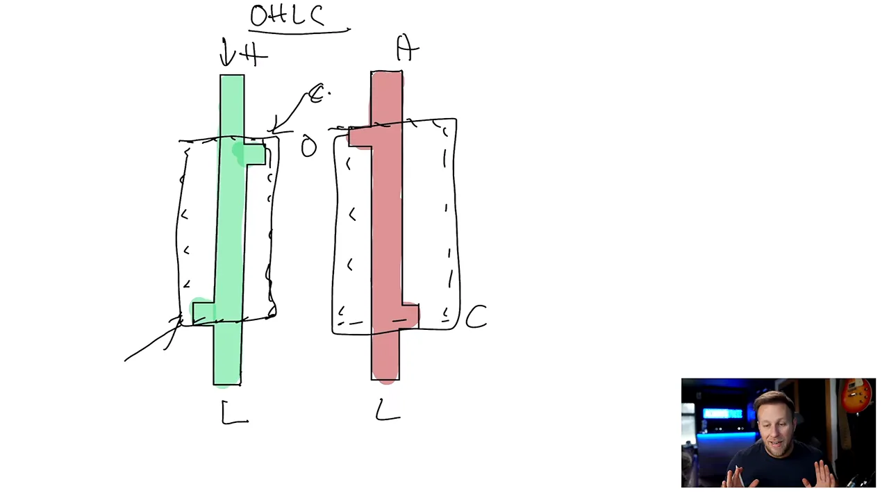
종가는 누가 이겼는지, 꼬리는 어떤 싸움이었는지
발표자가 '우위'를 만드는 두 요소로 꼽는 건 종가의 위치와 꼬리예요. 종가가 그 구간의 최저점 근처라면 그 시간의 승자는 매도자예요. 꼬리는 그 사이에 벌어진 줄다리기를 보여 줘요.
아래 그림의 동그라미 친 빨간 캔들을 보세요. 시가 위로 길게 솟은 화살표는 매수자들이 가격을 크게 밀어 올렸다는 뜻이에요. 하지만 결국 처음 자리보다 더 아래(C/L, 종가이자 저가)로 떨어져 끝났어요. 오른쪽에 위아래로 오르내리는 선은 한 시간 동안 사고파는 힘이 엎치락뒤치락한 과정을 그린 거예요.
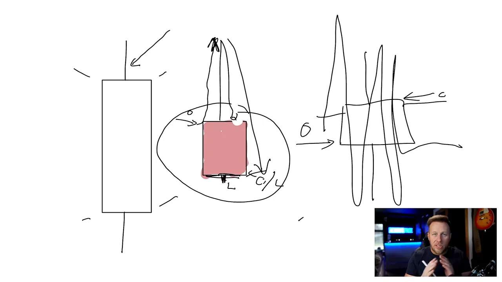
반대로 아래로 길게 찔렀다가 위에서 끝난 초록 캔들은 매도자들이 밀어붙였지만 막혔다는 이야기예요. 다음에는 상승이 이어질 가능성이 커요. 꼬리가 아예 없는 캔들도 있어요. 아래 그림 오른쪽처럼 초록 캔들의 시가가 저가, 종가가 고가라면 시작부터 끝까지 매수세가 밀어붙인 강한 상승이에요. 빨간 캔들이 시가=고가, 종가=저가라면 강한 하락이고요.
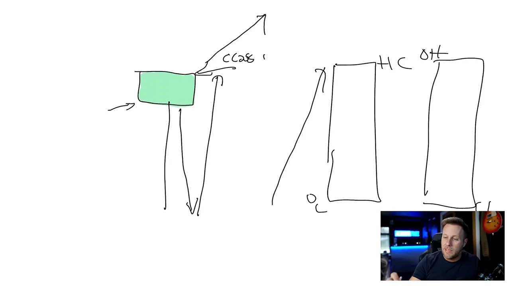
다만 캔들 하나만 보고 돈을 걸지는 않아요. 캔들은 '다음에 일어날 법한 일'의 이야기를 들려줄 뿐이고, 진입하려면 다른 기술적 근거가 뒷받침돼야 한다고 해요. 그 근거들이 다음 섹션의 주제예요.
시장을 읽는 순서: 상태, 국면, 지지·저항, 감속
발표자는 좋은 진입 자리를 찾는 요소를 여섯 가지로 묶어요. 하나만으로는 약하지만, 여러 근거가 한 가격대에 겹칠수록 많은 트레이더가 같은 곳을 보고 있다는 뜻이라 반응이 나올 확률이 높아진다는 논리예요. 이 섹션은 앞의 네 가지를, 다음 섹션은 나머지 둘을 다뤄요.
flowchart LR A["1. 시장 상태
상승·하락·횡보·혼조"] --> B["2. 국면
런 또는 되돌림"] B --> C["3. 지지·저항
수평선·추세선"] C --> D["4. 가격 감속"] D --> E["5. 캔들 패턴"] E --> F["6. 지표
피보나치·라운드 넘버"]
1. 시장 상태: 네 가지 중 어디인가
상승장은 왼쪽 아래에서 오른쪽 위로, 하락장은 왼쪽 위에서 오른쪽 아래로 가요. 횡보장은 위아래 벽 사이를 오가고요. 아래 그림의 맨 아래 들쭉날쭉한 선이 네 번째인 혼조 시장이에요. 방향 없이 구조가 계속 깨지는 시장이라, 이럴 때는 우위가 없으니 아예 쉬라고 해요.
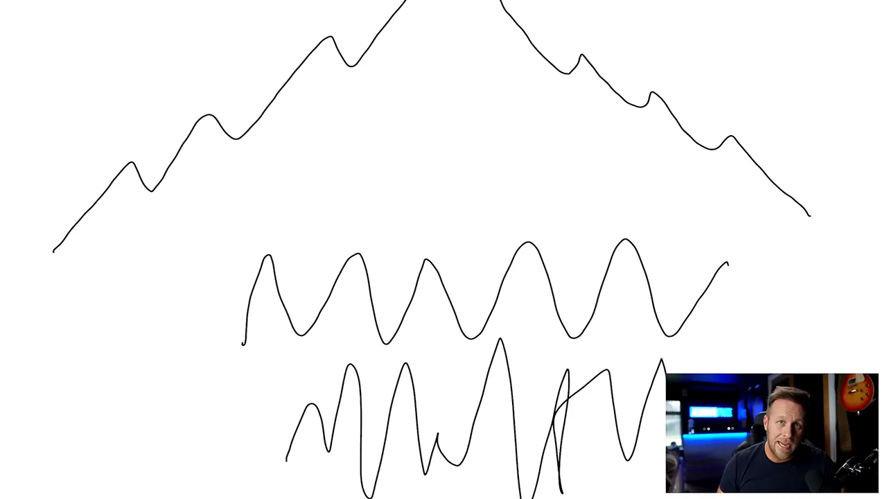
2. 국면: 런과 되돌림
추세는 한 방향으로 쭉 뻗는 '런'과 잠시 거꾸로 밀리는 '되돌림'을 번갈아 해요. 아래 달러/엔 일봉에서 위로 볼록한 흰 곡선들이 런, 아래로 휘는 짧은 곡선들이 되돌림이에요. 오른쪽 아래로 길게 그은 선은 되돌림 저점들을 이은 추세선이에요.
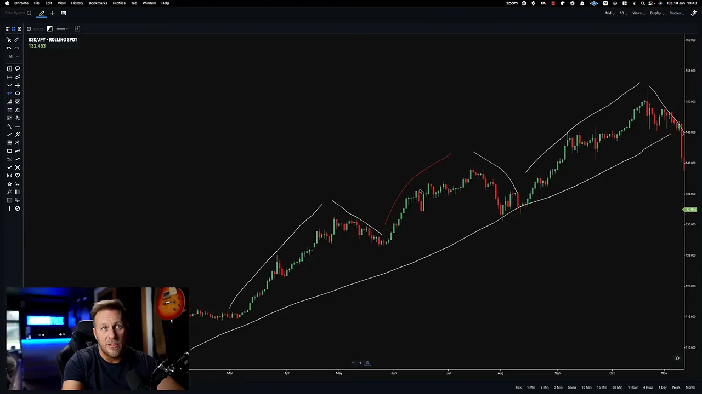
이게 중요한 이유는 초보가 런 한가운데에서 사기 때문이에요. 이미 늦게 들어갔으니 곧 되돌림이 오고, 겁이 나서 본전에 정리해 버려요. 상승 추세라면 되돌림을 기다렸다가 사야 좋은 가격을 얻어요. 바닥에서 사서 꼭대기에서 파는 건 누구도 꾸준히 못 한다며, 목표는 '가능한 한 좋은 가격'이라고 해요.
3. 지지와 저항: 천장이 바닥이 된다
가격이 부딪혀 튕겨 나오는 천장을 저항, 받쳐 주는 바닥을 지지라고 해요. 추세가 잘 흐를 때는 직전 런의 고점(저항)이 다음 되돌림에서 지지로 바뀌는 일이 잦아요. 아래 차트의 빨간 가로선과 흰 가로선이 각각 이전 고점 높이를 이어 그은 선이에요. 가격이 나중에 그 선까지 내려와 정확히 받쳐지는 게 보여요.
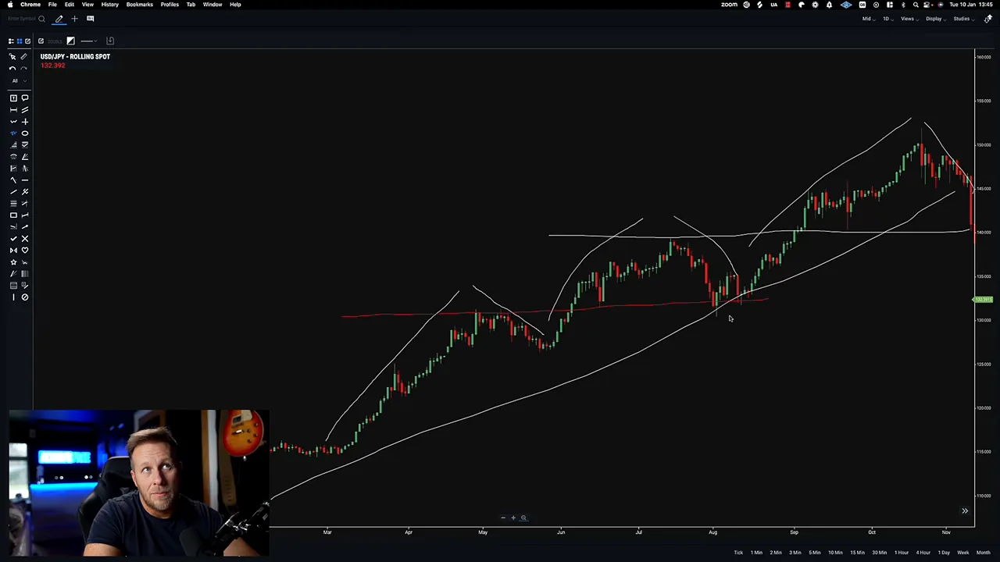
수평선만 있는 게 아니에요. 하락 추세에서 되돌림 고점(캔들 종가)들을 비스듬히 이으면 비스듬한 천장이 생겨요. 추세가 강할 때는 가격이 이 선을 존중하는 경향이 있어요. 아래 차트의 오른쪽 위에서 내려오는 긴 선이 그 예예요.
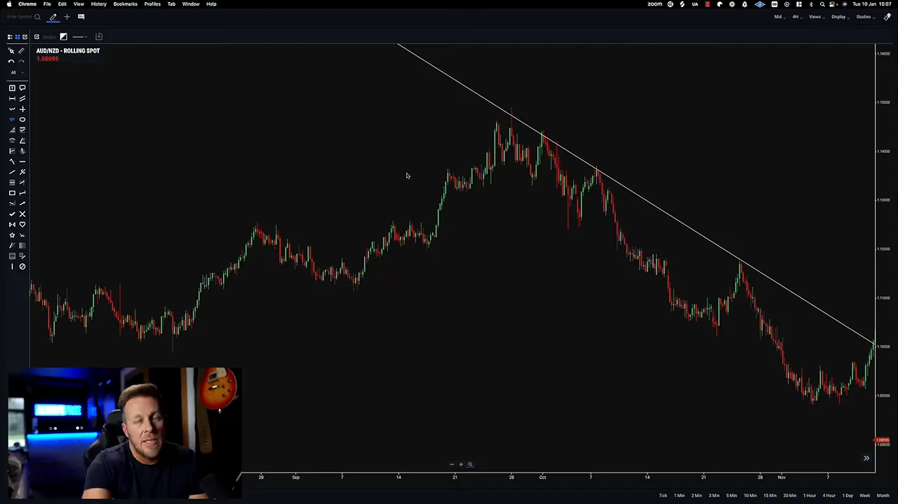
4. 가격 감속과 캔들 패턴
추세가 힘을 잃는 순간을 읽는 단서예요. AUD(Australian Dollar)/NZD(호주 달러/뉴질랜드 달러) 4시간봉 예시에서 되돌림 구간의 초록 캔들은 하나씩 작아지다가, 맨 오른쪽에서 위로 긴 꼬리를 남기고 끝나요. 캔들 색은 초록이지만 위로 밀었다가 되밀린 이야기이니 매도 압력이 들어왔다는 뜻이에요.
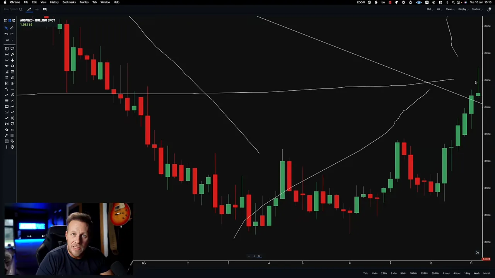
이런 캔들을 발표자는 '하이 테스트 캔들'이라고 불러요. 흔히 슈팅스타라고도 해요. 반대 방향으로 아래꼬리가 긴 건 '로 테스트 캔들'이에요. 도지는 시가와 종가가 거의 같아 결판이 나지 않은 캔들이에요.
핵심은 이런 캔들이 차트 어디에나 나온다는 점이에요. 아무 데서나 보고 들어가면 우위가 없어요. 시장 상태·국면·지지·저항이 맞는 '자리'에서 나올 때만 근거가 하나 더 쌓여요.
지표로 근거를 하나 더, 그리고 첫 진입
여섯 요소 중 마지막인 지표는 '필터를 하나 더 거는 것'이라고 해요. 초보 과정이라 깊이 들어가지 않고, 되돌림이 어디서 끝날지 볼 때 많이 쓰는 두 가지만 보여 줘요.
피보나치 되돌림과 라운드 넘버
피보나치 되돌림 도구는 직전 하락의 고점과 저점을 잡으면 그 사이에 비율별 가로선을 그려 줘요. 아래 차트 오른쪽의 파란 음영 위에 여러 가로선이 보이고, 오른쪽 끝에 비율이 적혀 있어요. 가격은 38.2% 선 근처, 사선 추세선과 만나는 자리까지 올라와 있어요.
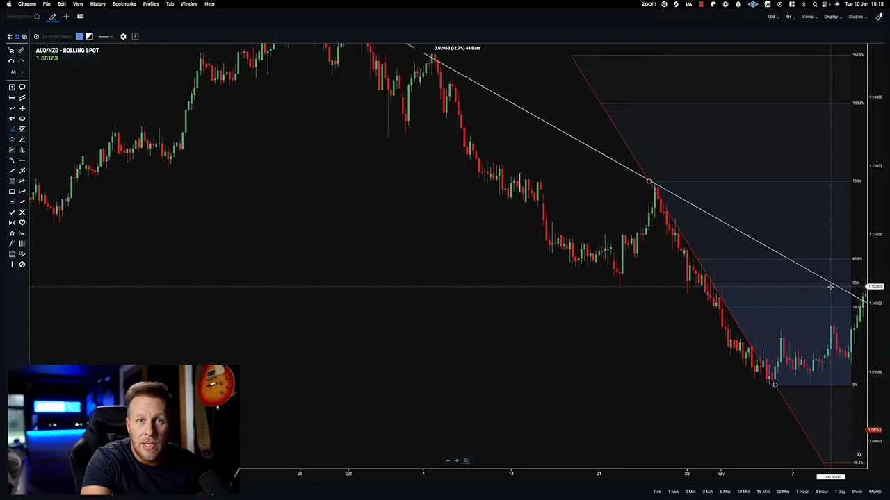
발표자는 38.2% 되돌림을 강한 추세의 표시로 봐요. 더 깊은 61.8%를 기다리는 사람도 있다고 해요. 또 하나는 1.1000처럼 딱 떨어지는 가격, 이른바 라운드 넘버예요. 주유할 때 금액을 0으로 딱 맞추려는 심리처럼, 많은 사람이 이런 가격에 주문과 익절을 걸어서 반응이 자주 나온다고 설명해요.
근거가 다 모이면 주문을 걸어요
이 예시는 근거가 한 자리에 다 모였어요. 하락 추세, 되돌림 국면, 지지가 저항으로 바뀐 가격대, 사선 추세선, 38.2%, 1.10, 그리고 하이 테스트 캔들. 발표자는 그 캔들의 저가 바로 아래에 매도 스톱 주문(가격이 그 아래로 떨어지면 팔겠다는 주문)을 걸고, 손절은 캔들 고가 위에, 목표는 직전 저점에 둬요.
아래 장면 가운데 위쪽의 짧은 흰 선이 진입 자리이고, 아래 긴 가로선이 목표인 직전 저점이에요. 진입 뒤 한 번 더 위꼬리가 나오며 밀려났고, 가격은 결국 목표선까지 내려가요.
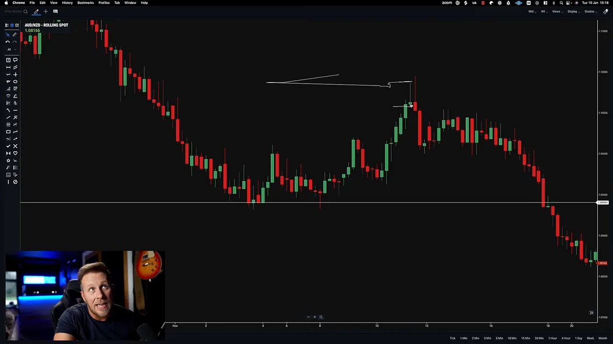
물론 결과를 알고 고른 예시예요. 발표자도 다음 할 일은 과거 차트를 한 봉씩 넘기며 같은 셋업이 나올 때마다 똑같이 해 보는 것, 곧 테스트라고 말해요.
주문 다섯 가지와 세 가지 쓰임
주문은 '이 조건이 되면 이렇게 해 달라'고 브로커에게 보내는 지시예요. 발표자는 먼저 이 점을 분명히 해요. 차트에 찍은 가격에 정확히 체결된다는 약속이 아니라, 가장 가까운 가격으로 채워 달라는 요청이라는 거예요. 이걸 모르면 체결가가 조금 달랐을 때 괜히 브로커를 탓하게 된다고 해요.
주문 다섯 가지
화이트보드 왼쪽에 매수 지정가(Buy Limit), 매도 지정가(Sell Limit), 매수 스톱(Buy Stop), 매도 스톱(Sell Stop), 시장가(At Market) 다섯 개가 적혀 있어요. 오른쪽 작은 그림은 각 주문이 현재가 기준 어디에 걸리는지를 그린 거예요. 지정가 두 개는 가격이 되돌아오는 자리에, 스톱 두 개는 가격이 뚫고 나가는 방향에 점선이 있어요.
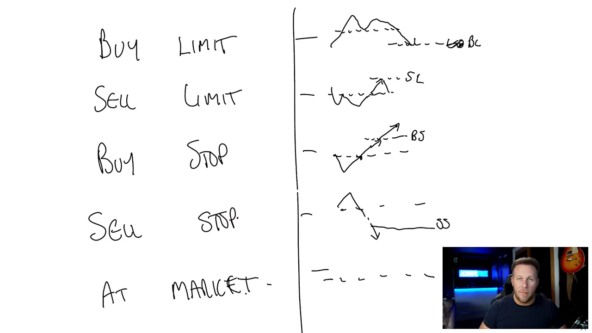
외울 건 두 가지뿐이에요. 사느냐 파느냐, 그리고 주문 가격이 현재가보다 위냐 아래냐예요. 아래 그림처럼 둘을 엮으면 네 칸이 나오고, 칸마다 들어갈 주문이 하나씩 정해져요.
모든 주문은 진입·손절·목표 어디에든 쓸 수 있어요
헷갈리기 쉬운 지점이 '스톱 주문'과 '손절(스톱로스)'이에요. 이름이 비슷하지만 다른 개념이에요. 손절은 주문의 '쓰임'이고, 스톱 주문은 주문의 '종류'예요. 아래 표의 세 칸(STOP LOSS, ENTRY, TARGET)마다 다섯 주문(BL·SL·AM·BS·SS)이 모두 들어가 있어요. 어떤 주문이든 세 용도 어디에나 쓸 수 있다는 뜻이에요.
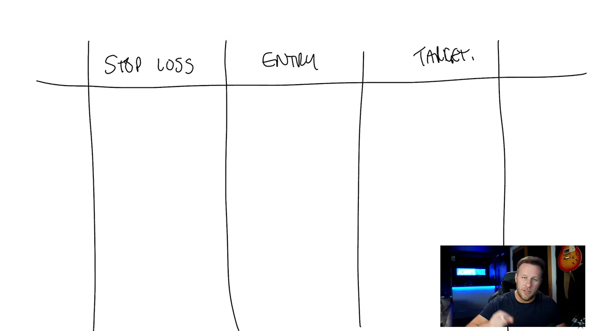
그래서 진입만 정교하게 고르고 손절과 목표는 대충 정하면 안 된다고 해요. 손절에는 숨 쉴 여유를, 목표에는 넉넉하되 욕심부리지 않는 크기를 줘야 해요.
어떤 주문을 고를지는 위치로 정해져요
예를 들어 이전 지지가 저항으로 바뀔 자리에서 팔고 싶다면, 그 위쪽 가격에 매도 지정가를 걸어 두고 기다려요. 들어간 뒤 목표는 아래쪽 저점에서 '되사는' 주문이니 매수 지정가예요. 예상과 달리 가격이 위로 가면 현재가보다 위에서 되사야 하니 손절은 매수 스톱이에요. 아래 그림에서 동그라미 친 BS, SL, BL이 각각 손절, 진입, 목표예요.
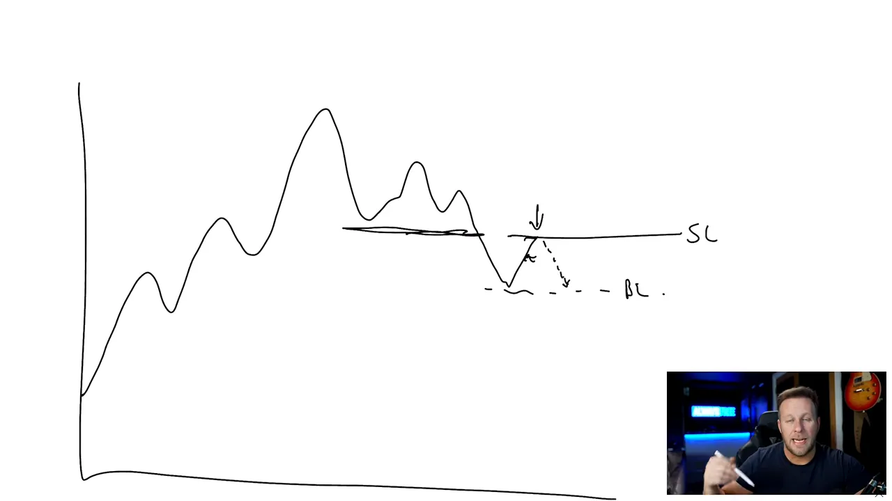
실제 차트로도 두 번 연습해요. 시장가로 팔고 들어갔다면 손절은 위쪽 매수 스톱, 목표는 아래쪽 매수 지정가예요. 이번에는 가격이 내려오면 사려고 한다면, 진입은 매수 지정가, 손절은 그 아래 매도 스톱, 목표는 위쪽 매도 지정가예요. 아래 장면에 SL(매도 지정가, 목표), BL(매수 지정가, 진입), SS(매도 스톱, 손절) 세 선이 그려져 있어요.
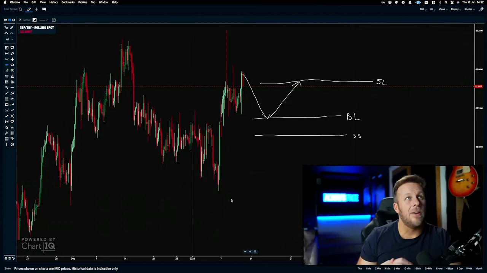
| 상황 | 진입 | 손절 | 목표 |
|---|---|---|---|
| 지금 바로 팔고 들어감 | 시장가 매도 | 매수 스톱 (위) | 매수 지정가 (아래) |
| 내려오면 사겠다 | 매수 지정가 (아래) | 매도 스톱 (더 아래) | 매도 지정가 (위) |
목표는 앉아서 지켜보다 시장가로 처리해도 되지만, 손절을 시장가로 하는 건 권하지 않는다고 해요. 그 순간 망설이게 되기 때문이에요.
1% 규칙으로 거래 크기 정하기
주문 위치를 정했으면 얼마를 걸지 정해요. 발표자는 아주 기본적인 수준에서, 한 거래에 계좌의 일정 비율만 위험에 두는 방법을 보여 줘요.
손절까지 거리를 핍으로 재요
외환 가격은 보통 소수 넷째 자리가 1핍이에요. 0.8550에서 사고 0.8500에 손절을 두면 그 차이가 50핍이에요. 엔화가 들어간 통화쌍(예: 131.20)만 소수 둘째 자리가 1핍이에요. 아래 화이트보드 오른쪽 아래에 JPY(Japanese Yen) 131.20이 따로 적혀 있는 이유예요.
계좌의 1% ÷ 핍 수 = 핍당 금액
화이트보드 맨 위 식을 따라가 보면 돼요. 계좌 10,000달러를 100으로 나누면 1%인 100달러가 나와요. 이 100달러를 손절 거리 50핍으로 나누면 핍당 2달러예요. 가격이 1핍 움직일 때마다 2달러씩 벌거나 잃도록 거래 크기를 맞추는 거예요.
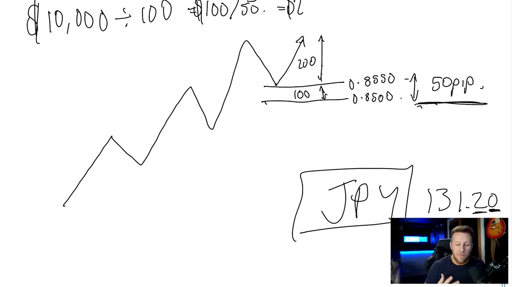
영상에서는 "0.1을 곱해도 같다"고 말하지만, 1%는 0.01을 곱한 값이에요. 계좌가 커지거나 줄면 1%의 금액도 조금씩 바뀌어요. 플랫폼에 따라 핍당 금액을 바로 넣기도 하고, 랏 단위로 넣기도 해요. 랏과 레버리지는 강의 끝에서 다뤄요.
숙제: 지지·저항 선 긋기
전략을 만들기 전에 눈을 훈련하는 연습을 하나 줘요. 차트를 넓게 줄여 놓고 수평선 도구로 지지와 저항에 선을 그어 보는 거예요. 아래 파운드/터키 리라 1시간봉처럼 선을 여러 개 그어 보면, 한때 천장이던 선이 나중에 바닥이 되는 장면이 계속 반복돼요.
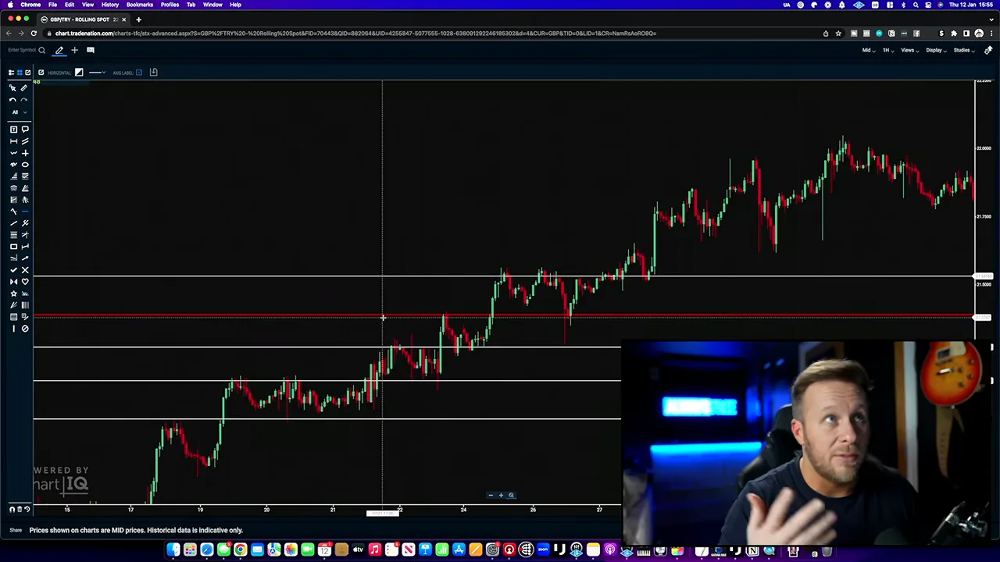
연습 전략을 만들고 백테스트하기
지금까지 배운 요소로 연습용 전략을 하나 만들고, 그 전략을 과거 차트에 대 보는 법을 보여 줘요. 발표자는 이게 수익이 나는 전략이라고 말하지 않아요. '전략이란 무엇으로 이뤄지는지', '검증은 어떻게 하는지'를 보여 주는 예시예요.
시간 프레임은 생활에 맞춰요
어떤 캔들 간격으로 볼지는 차트를 꾸준히 볼 수 있는 횟수로 정해요. 하루 한 번 같은 시간에 볼 수 있으면 캔들 하나가 하루인 일봉, 두세 번이면 4시간봉, 그보다 자주면 1시간봉이에요. 트레이더의 우위는 아주 작아서, 거래 하나를 놓치면 몇 주치 수익이 날아갈 수 있어요. 그래서 초보는 차트 앞에 있는 시간이 가장 짧은 일봉부터 시작하라고 해요.
연습 전략: 되돌림 뒤 '전일 저가보다 낮은 종가'
| 단계 | 규칙 (하락 추세 기준) | 주문 |
|---|---|---|
| 조건 | 하락 추세에서 되돌림이 나오고, 이전 지지가 저항으로 바뀐 자리 근처에서 감속이 보여요 | — |
| 신호 | 종가가 전일 캔들의 저가보다 낮은 캔들(Lower Low Lower Close)이 나와요 | — |
| 진입 | 신호 캔들 저가의 2핍 아래 | 매도 스톱 |
| 손절 | 되돌림 최고가의 2핍 위 | 매수 스톱 |
| 목표 | 직전 런의 가장 낮은 종가 | 매수 지정가 |
| 다음 거래 | 새 저점을 뚫고 마감한 뒤에야 다시 되돌림을 기다려요 | — |
상승 추세라면 모든 걸 뒤집으면 돼요. 테스트할 때는 상승장용과 하락장용을 따로 해 보라고 해요.
아래 AUD/USD(호주 달러/미국 달러) 일봉에 이 규칙을 적용한 흔적이 남아 있어요. 왼쪽의 큰 하락(흰 사선)이 런이고, 그 뒤 위로 솟은 구간이 되돌림이에요. 짧은 가로선들은 진입·손절 자리이고, 아래쪽 긴 가로선은 목표로 삼은 저점 부근이에요.
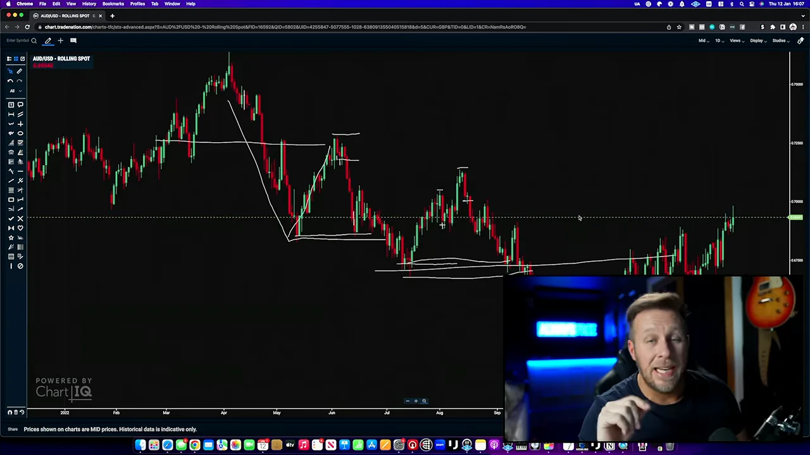
세 번의 거래를 따라가 봐요. 첫 번째는 진입 다음 날 손절 쪽으로 50%나 밀렸다가, 6일 뒤 목표에 닿아 3:1이 됐어요. 두 번째는 손절에 걸렸어요. 세 번째는 도지가 하루 끼었다가 2.5:1로 끝났어요. 한 거래에 100달러(1%)를 건다면 +300, −100, +250으로 약 450달러 이익이에요.
발표자가 강조하는 건 첫 거래의 '밀린 하루'예요. 실시간이라면 그 하루 동안 버틸 수 있었을까요? 목표 전에 겁먹고 정리하는 사람이라면 아직 실전 준비가 안 된 거라고 해요. 이익을 짧게 끊을수록 훨씬 자주 맞혀야 하기 때문이에요.
If you're right 50% of the time and you've got a one to one you're not going to be profitable.
절반만 맞히면서 손익비가 1:1이면 수익이 나지 않아요.
— 영상 1:27:55
목표 자리를 신중히 고르는 이유도 같은 예에서 보여요. 첫 거래의 목표는 이전 지지였는데, 가격은 거기서 멈췄다가 바로 반등해요. 욕심내서 더 아래를 노렸다면 이익을 놓쳤을 거예요.
백테스트 시트에 남길 것
테스트는 과거 차트를 한 봉씩 넘기며 규칙대로 거래했다고 치고 기록하는 일이에요. 발표자는 구글 스프레드시트를 열어 둬요. 아래 장면 뒤쪽 시트 위에는 진입 정보, 셋업 메모, 주문 정보(ORDER INFO), 청산 정보(EXIT INFO) 머리글이 보여요. 앞에 겹친 그림은 '패한 거래(Losers)를 이긴 거래(Winners)에서 빼면 순이익(Net Profit)'이라는 사업 구조예요.
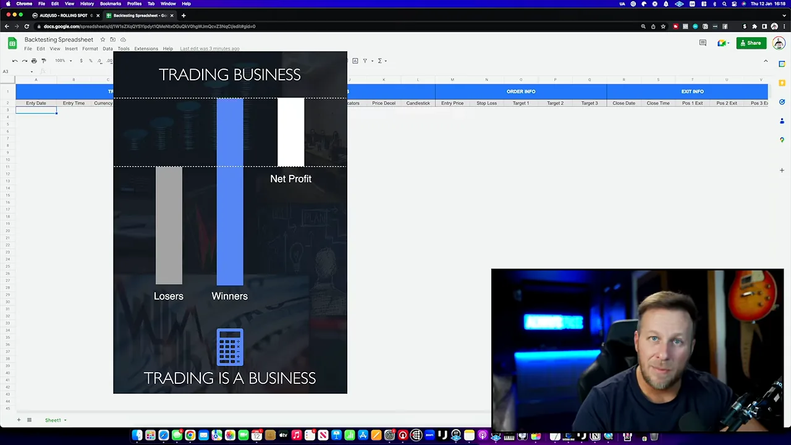
| 묶음 | 칸 | 왜 적나요 |
|---|---|---|
| 거래 정보 | 진입 날짜·시각, 통화쌍, 시간 프레임, 시스템(추세·역추세·횡보), 진입 방식 | 나중에 그 거래를 차트에서 빨리 찾으려고요. 한 통화쌍을 끝까지 테스트한 뒤 다음으로 넘어가요 |
| 셋업 메모 | 시장 상태, 국면, 지지·저항 터치 수(추세선은 가산점), 피보나치 비율, 가격 감속, 캔들 모양 | '이긴 거래는 다 다섯 번 이상 터치' 같은 공통점을 찾아 규칙을 좁히려고요 |
| 주문 정보 | 진입가, 손절가, 목표 1~3 | 규칙대로 계산했는지 확인하려고요 |
| 청산 정보 | 청산 날짜·시각, 청산 가격 | 손익과 보유 기간을 계산하려고요 |
실제로 한 줄 채워 보는 예시는 AUD/USD 일봉이에요. 2022년 8월 16일 진입가 0.7009(신호 캔들 저가 0.7011의 2핍 아래), 손절 0.7135, 목표 0.6739(최저 종가 0.6735의 위)예요. 목표를 최저 종가보다 살짝 위에 두는 건 스프레드 때문에 체결이 안 되는 일을 막으려는 '프런트 러닝'이라고 설명해요. 가격은 9월 6일 목표에 닿았어요. 3주짜리 거래예요. 손절가는 말하는 도중에 7139, 7137, 7135로 몇 번 바뀌는데, 마지막에 정한 0.7135로 적었어요.
왜 이렇게까지 기록할까요? 발표자는 두 가지를 꼽아요. 첫째, 앞으로 일어날 법한 일을 알려 주는 건 과거 데이터뿐이에요. 둘째, 가장 길었던 손실 구간과 가장 컸던 손실을 알면 세 번 연속 손실이 와도 '정상 범위'라며 계획을 지킬 수 있어요. 계획을 깨는 순간 꾸준함이 사라진다는 거예요. 백테스트가 필요 없다는 사람에게 "왜 안 하느냐"고 물으면 아무도 답하지 못했다고 해요.
기대값 공식으로 수익성 판단하기
테스트 기록이 쌓이면 이제 단 하나를 물어요. 이 시스템은 수익이 나는가? 발표자는 프롭 트레이딩 회사 안에서나 공유된다는 공식 하나를 알려 줘요.
(1 + W/L) × P − 1
W는 평균 수익, L은 평균 손실, P는 승률이에요. 아래 화이트보드가 계산 과정이에요. 평균 수익 200, 평균 손실 170을 넣으면 200 ÷ 170 = 1.18이고, 1을 더해 2.18이에요. 승률 55%를 곱하면 1.2, 여기서 1을 빼면 0.2예요.
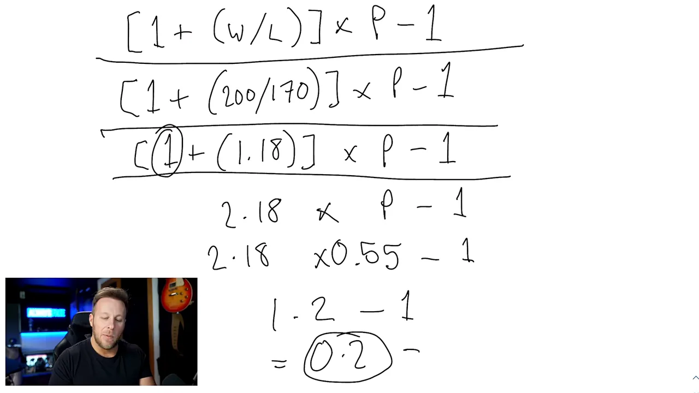
이 공식을 풀어 쓰면 '승률 × 손익비 − 패율'과 같아요. 결과는 거래 한 번에 평균 손실의 몇 배를 버는지로 읽을 수 있어요. 0.2라면 평균 손실 170의 0.2배, 거래당 약 34를 번다는 뜻이에요. 실제로 0.55 × 200 − 0.45 × 170 ≈ 33.5예요.
앞 섹션의 "승률 50%에 1:1이면 수익이 안 난다"는 말도 이 공식으로 확인돼요. (1 + 1) × 0.5 − 1 = 0이에요. 기대값이 딱 0이니, 수수료와 스프레드를 내고 나면 손해예요.
기대값 0
거래 한 번 평균 손익 0
- 처음 값(200, 170, 55%)에서 기대값이 영상과 같은 0.2 근처인지 보세요.
- W와 L을 둘 다 100으로, 승률을 50%로 맞춰 보세요. 기대값이 정확히 0이 돼요. 비용을 빼면 손해라는 뜻이에요.
- 승률을 40%로 낮추고 W를 300으로 올려 보세요. 절반 넘게 틀려도 손익비가 크면 기대값이 0보다 커요.
- W를 L보다 작게 두면 승률을 얼마나 높여야 0을 넘는지 찾아보세요. 이익을 일찍 끊는 습관이 왜 위험한지 보여요.
발표자는 수학에 매달리지 말고, 테스트 결과를 이 공식에 넣어 0보다 큰지만 확인하라고 해요. 그다음 단계는 여전히 돈을 걸지 않는 데모 거래예요. 주문 넣는 실수를 연습 계좌에서 미리 다 겪어 두라는 거예요.
브로커, 데모 주문, 레버리지
마지막 묶음은 실제 돈을 넣기 직전의 준비예요. 브로커를 고르는 기준, 데모 계좌에서 주문을 넣는 손순서, 그리고 일부러 맨 끝에 미뤄 둔 레버리지와 증거금이에요.
브로커를 고를 때 볼 것
브로커는 고객이 거래할 때 사는 값과 파는 값의 차이, 곧 스프레드로 돈을 벌어요. 공항 환전소에서 바꿨다가 다시 바꾸면 손해를 보는 것과 같은 구조예요. 이 자체는 문제가 아니라고 해요. 발표자가 꼽는 기준은 두 가지예요.
- 바로 연락할 수 있는가. 거래를 급히 닫아야 할 때 보안 질문과 대기열을 거치지 않고 담당자와 통화할 수 있어야 해요.
- 스프레드를 마음대로 바꾸지 않는가. 뉴욕 장이 끝나고 이어지는 아시아 세션에는 스프레드를 넓혀 지정가 주문이 체결되지 않는 일이 있다고 해요. 스프레드가 일정해야 백테스트 숫자도 실제와 맞아요.
덧붙여, 일부 브로커는 고객 주문을 시장에 내보내지 않고 반대편에 서는 'B북'으로 처리한다고 짚어요. 대부분의 개인이 결국 잃는다는 데 거는 셈이에요. 실력이 있다고 보면 시장으로 내보내는 'A북'으로 옮긴다고 해요.
데모 계좌에서 주문 넣기
플랫폼 화면에는 거래(Trade) 버튼과 주문(Order) 버튼이 따로 있어요. 발표자는 이렇게 외우라고 해요. 거래는 지금(시장가), 주문은 나중(지정가·스톱)이에요.
예시는 EUR(Euro)/AUD(유로/호주 달러) 일봉의 상승 쪽 신호예요. 계산은 앞에서 배운 그대로예요.
- 진입: 매수 스톱 1.5633 — 신호 캔들 고가보다 조금 위예요. 현재가보다 위에서 사니까 매수 스톱이에요.
- 손절: 1.5384, 249핍 아래 — 저가 1.5386의 2핍 아래예요. 1%인 100달러를 249핍으로 나누면 핍당 약 0.4달러예요. 손절 칸에 249핍을 넣으면 예상 손실이 100달러 가까이로 표시돼요
- 목표: 매도 지정가 1.5908, 275핍 위 — 직전 최고 종가 1.5910의 2핍 아래예요. 약 110달러를 노리는 1:1 조금 넘는 거래예요.
- 유효 기간을 '취소 시까지'(Good till cancelled)로 두고 제출해요 차트에 진입·손절·목표 선이 그려지고, 미체결 주문 목록에 주문이 떠요
아래 차트 오른쪽에 위에서부터 목표 1.5908, 진입 1.5633, 손절 1.5384 세 선이 보여요. 오른쪽 '미체결 주문' 목록에 매수 스톱 주문이 한 줄 올라가 있어요.
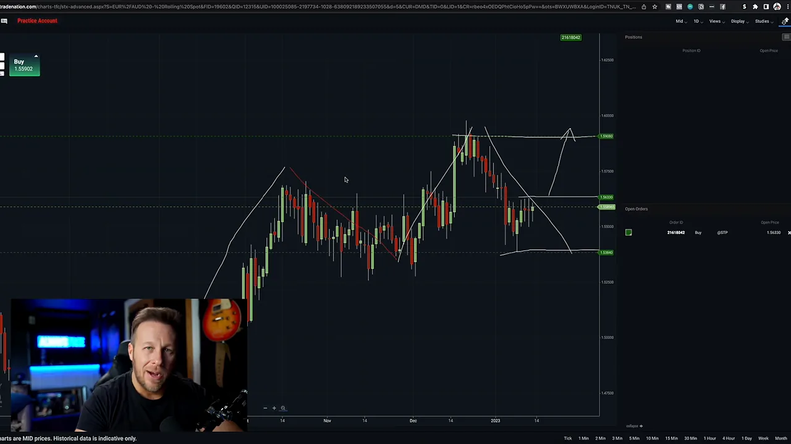
한 가지 문제가 생겨요. 이 데모 계좌의 최소 단위가 핍당 0.5달러라, 0.4달러로 넣은 주문이 0.5달러로 바뀌어요. 그러면 1%를 넘게 돼요. 손절 폭이 넓은 셋업은 1% 규칙을 지킬 수 없으니 건너뛰어야 할 수도 있다고 해요. 이렇게 폭이 큰 건 통화쌍의 평균 변동폭(ATR(Average True Range))이 크기 때문이라고 설명해요.
시장가로 바로 팔고 싶을 때는 거래 버튼을 눌러 금액을 넣고 매도를 누른 뒤, 열린 포지션을 '수정'해서 손절과 목표를 추가하면 돼요.
발표자는 전기기사 실습 경험으로 데모의 의미를 설명해요. 실습실은 전문가가 완벽하게 설치해 둔 곳이라 다 잘 돌아갔지만, 실제 현장에서는 수도관을 밟고 전선에 감전되는 일이 생겼대요. 그 실수를 현장에서는 자기 비용으로 겪어야 했지만, 트레이딩은 데모 계좌에서 공짜로 겪을 수 있어요. 주문 종류, 스프레드, 체결을 데모에서 충분히 익힌 뒤, 처음에는 작은 돈으로 실계좌를 시작하라고 해요.
레버리지와 증거금
레버리지를 맨 끝에 둔 건 일부러예요. 처음부터 '적은 돈으로 크게'에 마음이 흔들리지 않게 하려는 거예요. 발표자는 집 사는 일에 빗대요. 10만짜리 집을 1만만 내고 나머지는 은행에서 빌려 사면, 집값이 오른 몫은 내가 갖고 빌린 돈만 갚아요. 브로커도 비슷하게 돈을 빌려줘서 내 돈보다 큰 거래를 하게 해 줘요.
외환은 랏 단위로 거래해요. 아래 슬라이드처럼 스탠더드 랏은 기준 통화 10만 단위, 미니 랏은 1만, 마이크로 랏은 1천 단위예요.
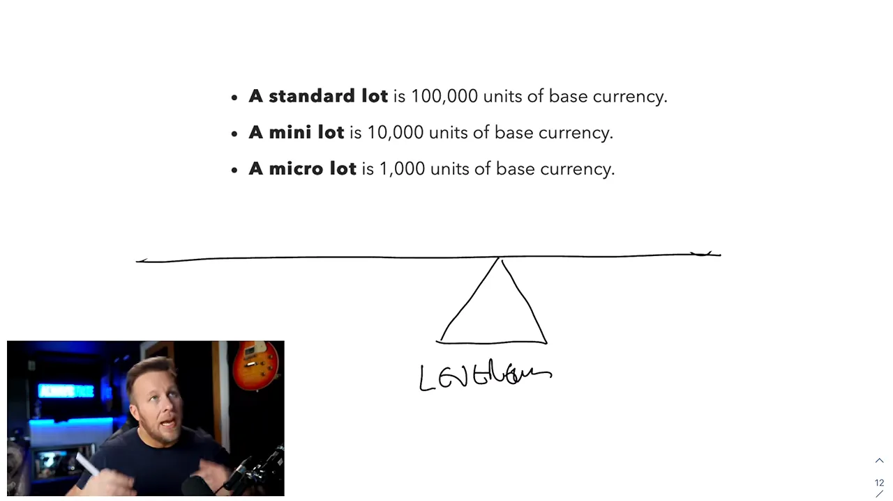
미니 랏 2개, 곧 2만 달러어치를 1.0500에 사서 1.0600에 팔면 100핍, 200달러 이익이에요. 레버리지가 1:1이면 이 거래에 2만 달러를 다 내야 해요. 200달러를 벌자고 2만 달러를 묶는 셈이죠.
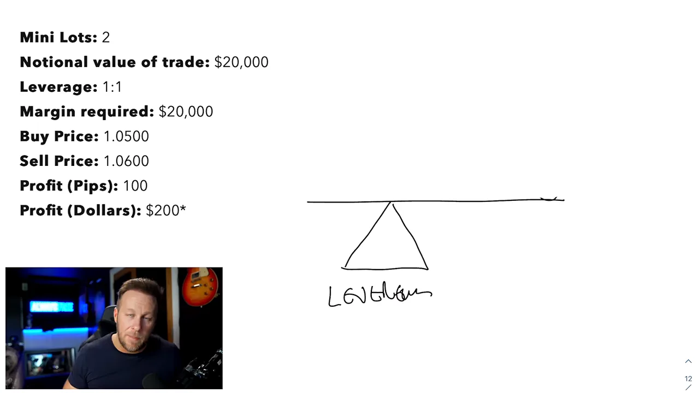
레버리지가 100:1이면 같은 거래에 필요한 증거금은 거래 금액 ÷ 100 = 200달러예요. 이익은 똑같이 200달러예요. 바뀐 건 Leverage와 Margin required 두 줄뿐이에요.
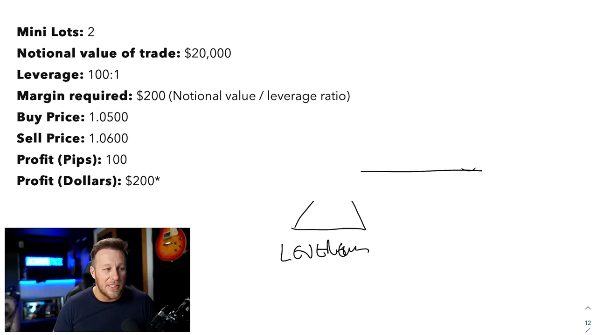
마진콜과 공매도의 위험
레버리지는 양날의 검이에요. 거래에서 브로커가 대 준 몫을 지키려고, 가격이 불리하게 움직여 내 돈이 일정 수준 아래로 줄면 돈을 더 넣으라는 연락(마진콜)이 오거나 포지션이 강제로 닫혀요. 아래 슬라이드는 주식 예시예요. 내 돈 10만 파운드에 브로커 증거금을 더해 20만 파운드로 주당 10파운드짜리 주식 2만 주를 샀는데, 주가가 25% 떨어진 7.5파운드에서 마진콜이 와요.
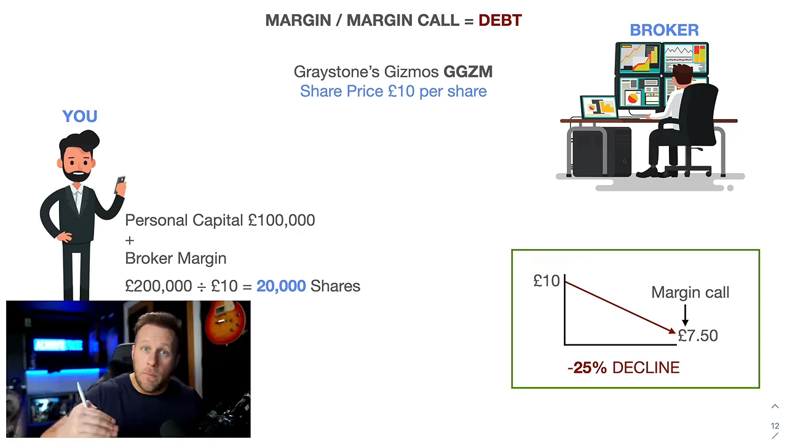
공매도(빌려서 먼저 팔기)는 더 위험해요. 아래 슬라이드 왼쪽처럼 사서 들어가면 최대 손실은 넣은 돈 10만 파운드이고 이익은 끝이 없어요. 오른쪽처럼 공매도하면 반대로 최대 이익이 10만 파운드이고 손실은 끝이 없어요. 발표자는 GameStop 사태를 공매도한 사람들이 계속 돈을 채워 넣다가 파산한 '숏 스퀴즈'의 예로 들어요.
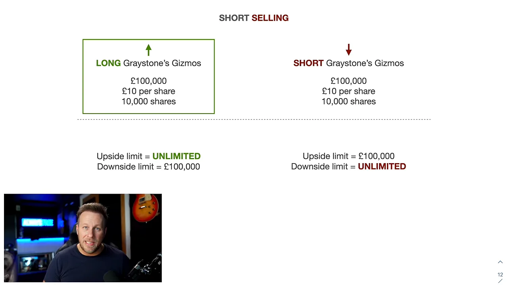
발표자의 마지막 당부는 단순해요. 손절은 언제나 계좌의 작은 비율로 미리 계산해 두고, 손절을 제대로 처리해 주는 브로커를 쓰고, 레버리지가 무엇을 키우는지 알고 쓰라는 거예요. 전문가처럼 다가가면 오래가는 결과를 얻는다고 해요.